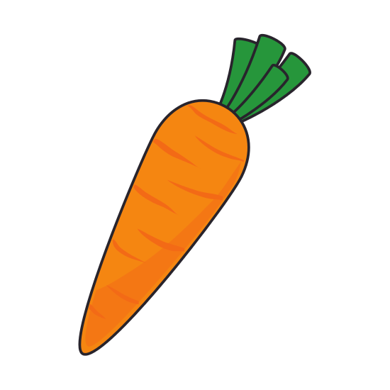
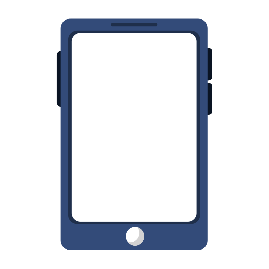
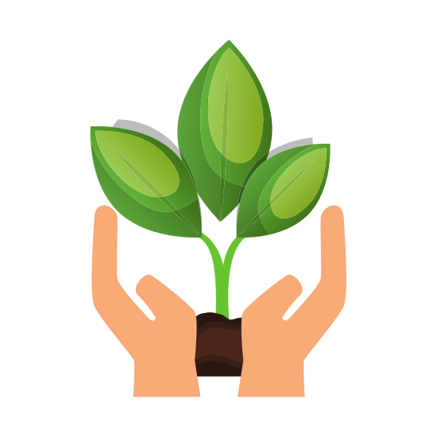

Le concept
Grâce à notre outil connecté en forme de carotte et son application mobile intuitive,
nous vous accompagnons chaque jour pour faire de votre jardinage un vrai loisir !
Nous mettons à votre disposition des conseils ciblés ainsi que des données certifiées par des professionnels de l'agronomie afin de vous aider à faire pousser vos plantes dans un environnement optimal à leur bien-être.
Avec notre système de rappels et de notifications, vous êtes informés en temps réel lorsque vos plantes nécessitent votre attention, et vous savez directement ce dont elles ont besoin.
Désormais, même sans avoir la main verte, vous pouvez jardiner et obtenir des résultats !
Nous mettons à votre disposition des conseils ciblés ainsi que des données certifiées par des professionnels de l'agronomie afin de vous aider à faire pousser vos plantes dans un environnement optimal à leur bien-être.
Avec notre système de rappels et de notifications, vous êtes informés en temps réel lorsque vos plantes nécessitent votre attention, et vous savez directement ce dont elles ont besoin.
Désormais, même sans avoir la main verte, vous pouvez jardiner et obtenir des résultats !




=